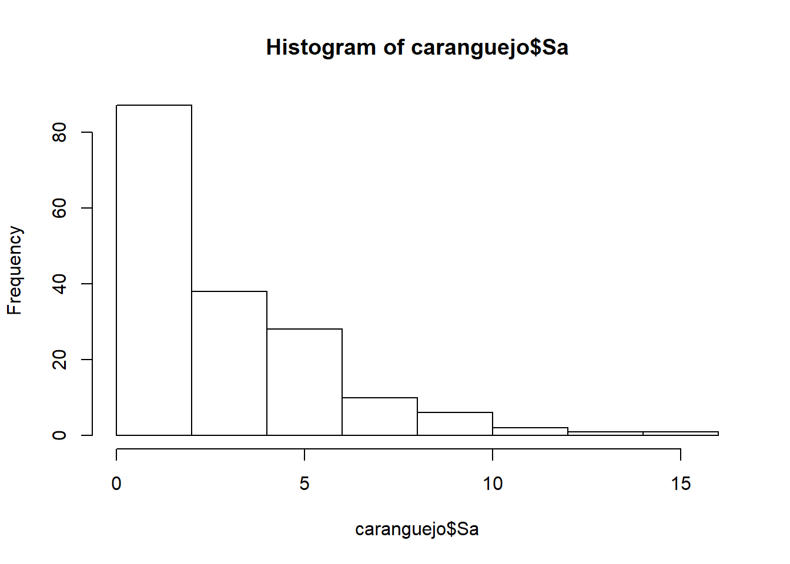

Capítulo 6 Regressão de Poisson
O modelo de Regressão de Poisson é aquele mais adequado quando os dados das variáveis dependentes são contáveis. Em muitos casos é de interesse do pesquisador modelar e estimar tais episódios. O número de alunos matriculados, a quantidade de visitantes de um parque, o número de multas efetuadas em determinado ano, o número de produtos registrados em determinado ano, etc. Em todos estes casos, a variável resposta é discreta e assume um número finito de valores.
6.1 O modelo
A distribuição de Poisson é dada por (Gujarati e Porter 2011):
\[ f(Y_i) = \frac{\mu^{Y}e^{-\mu}}{Y!} \] sendo \(Y=0,1,2,...\) e \(f(Y)\) é a probabilidade de \(Y\) assumir valores inteiros não negativos e \(Y!\) (fatorial de Y) representa \(Y! = Y \times (Y-1) \times (Y-2) \times 2 \times 1\). Ainda:
\[ E(Y) = \mu \] \[ var(Y) = \mu \]
A distribuição de Poisson tem a variância igual à sua média. O modelo de regressão de Poisson, portanto, é dado por:
\[ Y_i = E(Y_i) +\mu_i = \mu_i + u_i \] assim os \(Y\) se distribuem independentemente como variáveis de Poisson aleatórias com média \(\mu_i\) para cada indivíduo (Gujarati e Porter 2011) expresso:
\[ \mu_i = E(Y_i) = \beta_{i} + \beta _{2} X_{2i} + \beta_{3} X_{3i} + \dots + \beta_{k} X_{ki} \]
onde X são as variáveis que podem afetar o valor médio. Para que a equação seja estimada, representa-se o modelo:
\[ Y_i = \frac{\mu^{Y}e^{-\mu}}{Y!} + u_i \]
Assim, o modelo de regressão resultante não será linear nos parâmetros.
6.2 Estimando os parâmetros do modelo
No exemplo abaixo consta uma base de dados que será denominada caranguejo, derivada de PennState (2018). Este estudo buscou investigar os fatores que afetam a quantidade de caranguejos machos (satélites) residindo perto dos caranguejos fêmeas. As variáveis explicativas:
- (Sa) número de satélites (variável dependente);
- (C) cor do caranguejo fêmea;
- (S) condição da coluna;
- (Wt) peso;
- (W) largura da carapaça.
Seguem os procedimentos para importação da base de dados do exemplo:
library(readr)
caranguejo <- read_table2("https://goo.gl/Wvvnrf",
col_names = FALSE)
colnames(caranguejo)=c("Obs","C","S","W","Wt","Sa")
summary(caranguejo) Obs C S W Wt
Min. : 1 Min. :1.00 Min. :1.00 Min. :21.0 Min. :1.20
1st Qu.: 44 1st Qu.:2.00 1st Qu.:2.00 1st Qu.:24.9 1st Qu.:2.00
Median : 87 Median :2.00 Median :3.00 Median :26.1 Median :2.35
Mean : 87 Mean :2.44 Mean :2.49 Mean :26.3 Mean :2.44
3rd Qu.:130 3rd Qu.:3.00 3rd Qu.:3.00 3rd Qu.:27.7 3rd Qu.:2.85
Max. :173 Max. :4.00 Max. :3.00 Max. :33.5 Max. :5.20
Sa
Min. : 0.00
1st Qu.: 0.00
Median : 2.00
Mean : 2.92
3rd Qu.: 5.00
Max. :15.00 Abaixo o histograma da distribuição do número de satélites (variável dependente) da base de dados:

Relacionando a quantidade de satélites (Sa) com a largura da carapaça:
Para criação da regressão de Poisson utiliza-se a função já conhecida glm(), sendo que em family é determinado o tipo de análise desejada (“poisson”):
Call:
glm(formula = Sa ~ W, family = "poisson", data = caranguejo)
Deviance Residuals:
Min 1Q Median 3Q Max
-2.853 -1.988 -0.493 1.097 4.922
Coefficients:
Estimate Std. Error z value Pr(>|z|)
(Intercept) -3.305 0.542 -6.09 1.1e-09 ***
W 0.164 0.020 8.22 < 2e-16 ***
---
Signif. codes: 0 '***' 0.001 '**' 0.01 '*' 0.05 '.' 0.1 ' ' 1
(Dispersion parameter for poisson family taken to be 1)
Null deviance: 632.79 on 172 degrees of freedom
Residual deviance: 567.88 on 171 degrees of freedom
AIC: 927.2
Number of Fisher Scoring iterations: 6O modelo estimado:
\[ log(\hat\mu {/t}) = -3.30476 + 0,16405 W_i \] ou
\[ E(Y)= e^{-3.30476} + e^{0,16405 W_i} \]
A leitura do resultado da regressão em geral se assemelha com os modelos de regressão linear e múltipla. Os resultados mostram que a largura da carapaça (W) tem relação positiva com o número de satélites (Sa) em volta do caranguejo fêmea, possuindo significância estatística a \(p=0,001\).
A interpretação do parâmetro \(0,16405W_i\):
(a) como o parâmetro \(\beta_1\) é positivo, há uma relação positiva entre oa largura da carapaça (W) e o número de satélites (sa) esperados.
(b) exp(0,16405) = 1,178273. Logo, para cada elevação unitária na largura da carapaça (W) dos caranguejos, eleva-se em 1,178273 vezes o número de satélites (Sa).
Teste de dispersão:
Overdispersion test
data: regpoisson
z = 5.6, p-value = 1e-08
alternative hypothesis: true dispersion is greater than 1
sample estimates:
dispersion
3.157 - (c) O parâmetro de super-dispersão para esta equação é maior que 1. Sempre que for muito superior a 1 há vestígios de super-disposição no modelo.
Abaixo a análise de variância.
Analysis of Deviance Table
Model: poisson, link: log
Response: Sa
Terms added sequentially (first to last)
Df Deviance Resid. Df Resid. Dev Pr(>Chi)
NULL 172 633
W 1 64.9 171 568 7.8e-16 ***
---
Signif. codes: 0 '***' 0.001 '**' 0.01 '*' 0.05 '.' 0.1 ' ' 1Abaixo são incluídos os valores preditos regpoisson$fitted.values juntamente com os dados originais.
Obs C S W Wt Sa pred
1 1 2 3 28.3 3.05 8 3.810
2 2 3 3 26.0 2.60 4 2.613
3 3 3 3 25.6 2.15 0 2.447
4 4 4 2 21.0 1.85 0 1.150
5 5 2 3 29.0 3.00 1 4.274
6 6 1 2 25.0 2.30 3 2.217É possível comparar a distribuição dos valores preditos decorrentes da utilização do modelo de regressão de Poisson com a amostra inicial da base de dados analisada:

Figura 6.1: Valores ajustados e preditos do número de satélites (Sa) em função do tamanho da carapaça (W)
No entanto, é possível melhorar a precisão do modelo de regressão utilizado, uma vez que os dados iniciais apresentam os casos individuais da amostra de cada caranguejo observado com suas respectivas características das variáveis independentes. Uma forma é agrupar os dados em intervalos da variável independente, contando os o número de casos (variável dependente) em cada intervalo.
Foram determinados 8 intervalos (“Intervalo”) conforme o tamanho da carapaça dos caranguejos. Contou-se o número de casos (variável “numcasos”) de caranguejos em cada intervalo de tamanho da carapaça; o camanho médio da carapaça (“width”) em cada intervalo e; o número total de satélites (“satotal”) esperados em cada intervalo:
Intervalo=c("<23,25", "23,25-24,25","24,25-25,25","25,25-26,25",
"26,25-27,25","27,25-28,25","28,25-29,25",">29,25")
attach(caranguejo)
numcasos=list(length(subset(W, W <23.25)),
length(subset(W, W >23.25 & W <24.25)),
length(subset(W, W >24.25 & W <25.25)),
length(subset(W, W >25.25 & W <26.25)),
length(subset(W, W >26.25 & W <27.25)),
length(subset(W, W >27.25 & W <28.25)),
length(subset(W, W >28.25 & W <29.25)),
length(subset(W, W >29.25)))
width=list(mean(subset(W, W <23.25)),
mean(subset(W, W >23.25 & W <24.25)),
mean(subset(W, W >24.25 & W <25.25)),
mean(subset(W, W >25.25 & W <26.25)),
mean(subset(W, W >26.25 & W <27.25)),
mean(subset(W, W >27.25 & W <28.25)),
mean(subset(W, W >28.25 & W <29.25)),
mean(subset(W, W >29.25)))
satotal=list(sum(subset(Sa, W <23.25)),
sum(subset(Sa, W >23.25 & W <24.25)),
sum(subset(Sa, W >24.25 & W <25.25)),
sum(subset(Sa, W >25.25 & W <26.25)),
sum(subset(Sa, W >26.25 & W <27.25)),
sum(subset(Sa, W >27.25 & W <28.25)),
sum(subset(Sa, W >28.25 & W <29.25)),
sum(subset(Sa, W >29.25)))
numcasos <- data.frame(matrix(unlist(numcasos), nrow=8, byrow=T),
stringsAsFactors=FALSE)
width <- data.frame(matrix(unlist(width), nrow=8, byrow=T),
stringsAsFactors=FALSE)
satotal <- data.frame(matrix(unlist(satotal), nrow=8, byrow=T),
stringsAsFactors=FALSE)
novosdados=data.frame(Intervalo,numcasos,round(width,2),satotal)
names(novosdados)=c("Intervalo","numcasos","width","satotal")
novosdados Intervalo numcasos width satotal
1 <23,25 14 22.69 14
2 23,25-24,25 14 23.84 20
3 24,25-25,25 28 24.77 67
4 25,25-26,25 39 25.84 105
5 26,25-27,25 22 26.79 63
6 27,25-28,25 24 27.74 93
7 28,25-29,25 18 28.67 71
8 >29,25 14 30.41 72Segue a especificação deste novo modelo agrupado. Segundo PennState (2018), utiliou-se o componente de ajuste da equação (offset) como o logarítmo do número de casos (“lcases”), como “o valor de ajuste ‘t’ no modelo que representa o espaço fixo, neste caso o grupo (caranguejos com largura similar)”. O resultado da nova regressão se mostra melhor ajustado, com redução do índice AIC:
# Log do Número de Casos
lcases=log(numcasos)
# Incluir a varíavel anterior no objeto novosdados
novosdados=data.frame(novosdados,lcases)
names(novosdados)[5]="lcases"
model=glm(satotal~width, offset=lcases, family="poisson", data=novosdados)
summary(model)
Call:
glm(formula = satotal ~ width, family = "poisson", data = novosdados,
offset = lcases)
Deviance Residuals:
Min 1Q Median 3Q Max
-1.533 -0.773 -0.345 0.712 1.039
Coefficients:
Estimate Std. Error z value Pr(>|z|)
(Intercept) -3.5355 0.5760 -6.14 8.4e-10 ***
width 0.1727 0.0212 8.13 4.1e-16 ***
---
Signif. codes: 0 '***' 0.001 '**' 0.01 '*' 0.05 '.' 0.1 ' ' 1
(Dispersion parameter for poisson family taken to be 1)
Null deviance: 72.3772 on 7 degrees of freedom
Residual deviance: 6.5168 on 6 degrees of freedom
AIC: 56.96
Number of Fisher Scoring iterations: 4A fórmula para esta nova regressão:
\[ log(\hat\mu/t)=-3.535 + 0,1727 width_i + log(t) \] Desta forma:
- (a) em conformidade com a equação anterior, o número esperado de satélites (satotal) cresce de acordo com o tamanho médio da carapaça dos caranguejos (width), pois o coeficiente é positivo.
- (b) como exp(0,1727)=1,188509, espera-se que para cada alteração unitária no tamanho médio da carapaça dos caranguejos (width) eleve-se em 1,188509 vezes o número esperado de satélites (satotal).
Teste de super-dispersão:
Overdispersion test
data: model
z = -0.66, p-value = 0.7
alternative hypothesis: true dispersion is greater than 1
sample estimates:
dispersion
0.8273 - (c) o tesde de superdispersão aprovou a hipótese nula (\(p>0,05\)) de que não há problemas de super-dispersão no modelo.
Abaixo a análise de variância:
Analysis of Deviance Table
Model: poisson, link: log
Response: satotal
Terms added sequentially (first to last)
Df Deviance Resid. Df Resid. Dev Pr(>Chi)
NULL 7 72.4
width 1 65.9 6 6.5 4.8e-16 ***
---
Signif. codes: 0 '***' 0.001 '**' 0.01 '*' 0.05 '.' 0.1 ' ' 1Abaixo demonstra-se a plotagem dos valores originais e preditos com a regressão de Poisson:
plot(novosdados$satotal, pch="o", col="blue", xlab="Width (grupos)",
ylab="Número de satélites")
points(model$fitted.values, pch="p", col="red")
legend(6,30,c("obs","pred"), pch=c("o","p"), col=c("blue","red"))Figura 6.2: Valores observados e preditos
Fonte: Adaptado de PennState (2018).
Intervalo numcasos width satotal lcases pred
1 <23,25 14 22.69 14 2.639 20.54
2 23,25-24,25 14 23.84 20 2.639 25.06
3 24,25-25,25 28 24.77 67 3.332 58.85
4 25,25-26,25 39 25.84 105 3.664 98.61
5 26,25-27,25 22 26.79 63 3.091 65.54
6 27,25-28,25 24 27.74 93 3.178 84.25Alguns procedimentos usuais para avaliar a qualidade do modelo e ajuste dos dados da regressão de Poisson:
- Análise de resíudos;
- Análise de pontos influentes;
- Análise de variância;
- Indicador AIC;
- Análise de super-dispersão do modelo (quando Var(Y) > E(Y)). Neste caso, pode ocorrer por três motivos: a) função de ligação inadequada: talvez outras funções além da logarítimica se ajustem melhor; b) não inclusão de variáveis relevantes ao modelo; c) excessos de zeros.
Referências
Gujarati, Damodar N., e Down C Porter. 2011. Econometria básica. 5a ed. New York: Mc Graw Hill.
PennState. 2018. «R - Poisson Regression Model for Count Data». https://onlinecourses.science.psu.edu/stat504/node/169/.